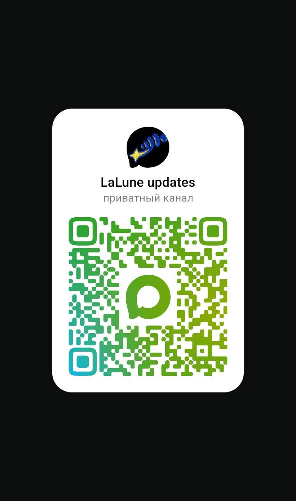

OPEN SOURCE / CROSS-PLATFORM
Свободный клиент для современных туннельных протоколов.
LaLune объединяет CSQTT, CSQTTR и ToTS в одном приложении для Windows, Android, Linux, macOS, iOS и OpenWRT.
Загрузка данных о релизе...

CSQTT
CSQTTR
ToTS
PROJECT STATUS
Проект в цифрах
Данные загружаются напрямую с GitHub и обновляются без пересборки сайта.
CONTRIBUTORS
Люди, которые двигают LaLune
Аватар и имя ведут прямо в профиль автора на GitHub.
DOWNLOAD
Два пути к последней версии.
Основной источник — GitHub Releases. Если GitHub недоступен, используй зеркало в канале LaLune updates в MAX.

MAX MIRROR
Зеркало для сетей с ограниченным доступом.
Открой канал по кнопке выше или отсканируй QR-код с другого устройства.